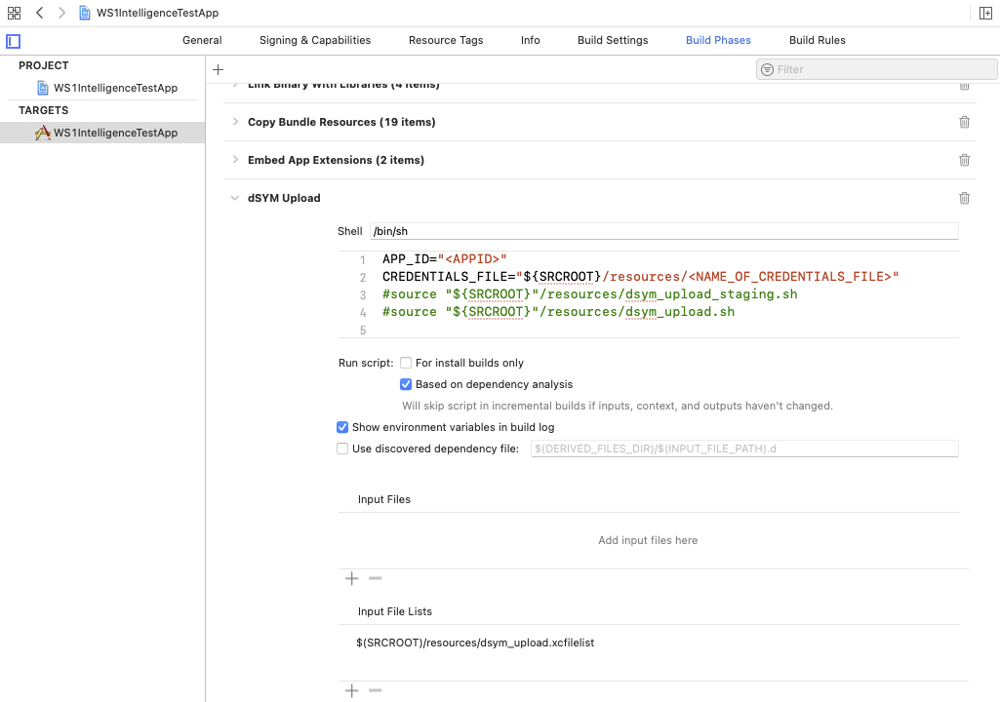
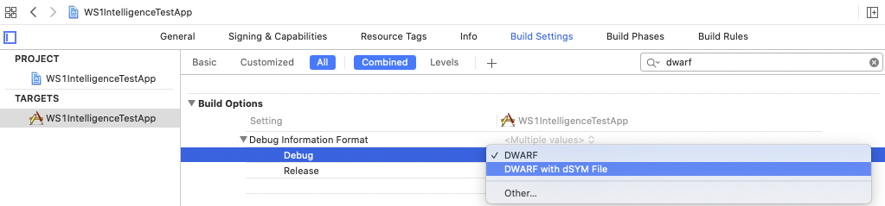
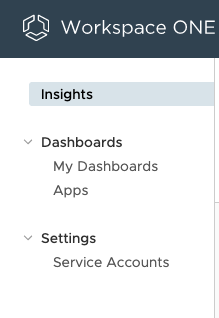
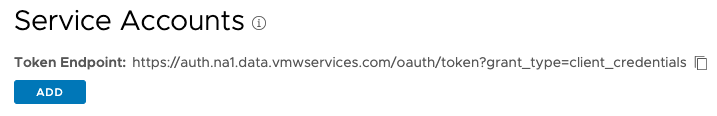
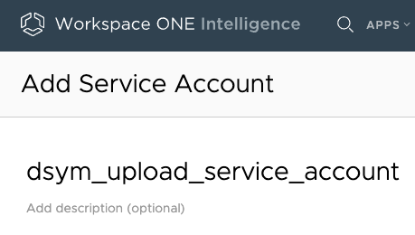

Note
Cocoapods is no longer supported as a means of installing Workspace ONE Intelligence SDK. Please use Swift Package Manager as described below.
There are two ways you can add the Workspace ONE Intelligence SDK for Apple to your project:
Add the Workspace ONE Intelligence SDK package from this URL: <SPM.developer.vmware.com> TODO: add package URL
Manual
Download and unzip the iOS SDK. Copy the resulting folder in your source folder.
Drag the
WS1Intelligence.xcframeworkinto your XCode project. The iOS framework is in theiOSfolder.Go to your XCode project: click on Build Phases and under “Link Binary with Libraries” add (‘+’)
SystemConfiguration.frameworkandCoreData.framework.
Obtain your app ID from Workspace ONE Intelligence platform.
Import the Workspace ONE Intelligence SDK header.
For Objective-C apps, import the Workspace ONE Intelligence SDK header in your
application delegate’s implementation file. For Swift applications, place this
import in your bridging-header.h file.
#import <WS1Intelligence/WS1Intelligence.h>
Enable Workspace ONE Intelligence SDK.
Call enableWithAppID in your AppDelegate’s application:didFinishLaunchingWithOptions: method.
Objective-C
- (BOOL)application:(UIApplication *)application didFinishLaunchingWithOptions:(NSDictionary *)launchOptions {
[WS1Intelligence enableWithAppID:@"YOUR APP ID GOES HERE"];
// other code for your app
return YES;
}
Swift
func application(_ application: UIApplication, didFinishLaunchingWithOptions launchOptions: [UIApplicationLaunchOptionsKey: Any]?) -> Bool {
WS1Intelligence.enable(withAppID: "YOUR APP ID GOES HERE")
// other code for your app
return true
}
Register your app at the Workspace ONE Intelligence portal to get an App ID
to be used in place of "YOUR APP ID GOES HERE".
Setup Automatic dSYM Uploads.
Note
You can download the latest dSYM upload script for Workspace ONE Intelligence from the Download page. The following refers to version 6.0.1 of dsym_upload.sh. Older versions of the script are no longer supported. SDK releases v6.0.0 and above are bundled with this script.
Note
Please note that cURL (a dependency for the script) has a known issue which may cause a failure inside the script while uploading large dSYM files. The version of cURL that ships with the latest OSX builds has been confirmed to exhibit this issue (7.64.1). If you experience problems during the upload phase of the script, try to upgrade to a newer version. Version 7.69.1 has been confirmed to resolved the issue.
In your Xcode application target’s “Build Phases” tab, add a new Run Script.
Copy and paste the following code if you’re using Swift Package Manager:
APP_ID="<YOUR_APP_ID>"
CREDENTIALS_FILE="${SRCROOT}/<PATH_TO_CREDENTIALS_FILE>"
source "${PODS_ROOT}/WS1IntelligenceSDK/dsym_upload.sh"
If you manually installed the SDK, copy and paste this code:
APP_ID="<YOUR_APP_ID>"
CREDENTIALS_FILE="${SRCROOT}/<PATH_TO_CREDENTIALS_FILE>"
source "${SRCROOT}/<PATH_TO_SCRIPT>/dsym_upload.sh"
In both cases, you will need to add the included xcfilelist file in the Input File Lists section.
$(SRCROOT)/<PATH_TO_SCRIPT>/dsym_upload.xcfilelist
When you build your Xcode application, the dSYM files for your application (and any dependent modules to which you added the Run Script) will be uploaded to Workspace ONE Intelligence and become available for crash symbolication.
DWARF dSYM file generation can be toggled in the build options for the target. If you attempt to run the script without dSYM generation enabled, then the script will fail. Select ‘DWARF with dSYM File’ to generate the dSYM file.
Log into the Workspace ONE Intelligence Platform and click the Service Accounts menu.
At the top of the page, click the Add button to add a new account.
Name the service account as desired.
Click GENERATE CLIENT SECRET button.
Save the .json file to your source repository and amend the path in the Xcode Script Phase
HTTP 403 Authentication Error
This most often occurs due to a missing, expired, or incorrect credentials file. Ensure that the correct credentials file is being used. This type of authentication error can also occur if the script is obtaining an incorrect app ID. Please verify in the logs that the correct app ID is being used.
PROTOCOL_ERROR Failure during cURL Upload
It has been observed that the default cURL version which ships with current OSX builds may exhibit a known issue when uploading dSYM files. If you experience problems during the upload phase of the script, try to upgrade to a newer version. cURL version 7.69.1 and above has been verified to resolve this problem.
HTTP/2 stream 1 was not closed cleanly: PROTOCOL_ERROR (err 1)
The dSYM upload script causes Xcode build to fail
The script will cause a build failure by default. This behavior is possible to disable by toggling a flag inside the script itself. You may wish to change this setting if you are building without internet access, or for other similar reasons. Note that crash symbolication cannot be completed without a matching dSYM for a particular build of an app.
REQUIRE_UPLOAD_SUCCESS=${REQUIRE_UPLOAD_SUCCESS:=0}
Your app is now integrated with Workspace ONE Intelligence! Additional features require adding more code to your project.
Recommended initialization orders:
Crashlytics:
Workspace ONE Intelligence SDK should be initialized before Crashlytics
Objective-C
[WS1Intelligence enableWithAppID:@"YOUR APP ID GOES HERE"];
// Initialize Crashlytics
Swift
WS1Intelligence.enable(withAppID: "YOUR APP ID GOES HERE")
// Initialize Crashlytics
AppDynamics:
AppDynamics should be initialized before Workspace ONE Intelligence SDK
Objective-C
// Initialize AppDynamics
[WS1Intelligence enableWithAppID:@"YOUR APP ID GOES HERE"];
Swift
// Initialize Crashlytics
WS1Intelligence.enable(withAppID: "YOUR APP ID GOES HERE")
New Relic:
Workspace ONE Intelligence SDK should be initialized before New Relic
Objective-C
[WS1Intelligence enableWithAppID:@"YOUR APP ID GOES HERE"];
// Initialize New Relic
Swift
WS1Intelligence.enable(withAppID: "YOUR APP ID GOES HERE")
// Initialize New Relic